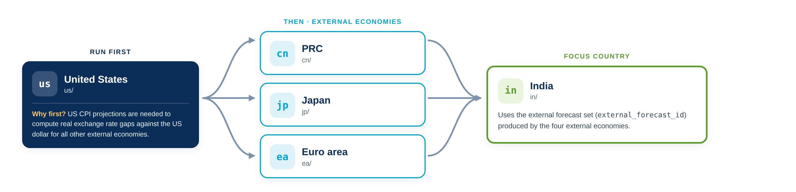
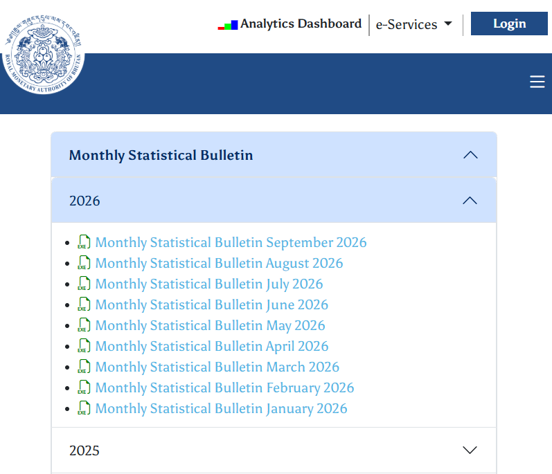
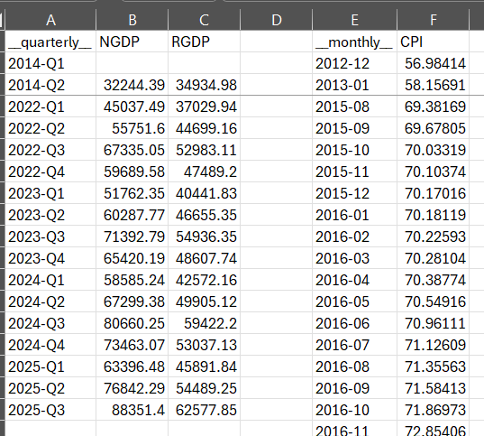
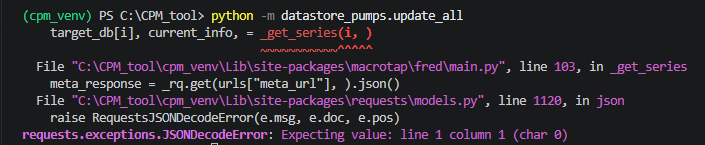
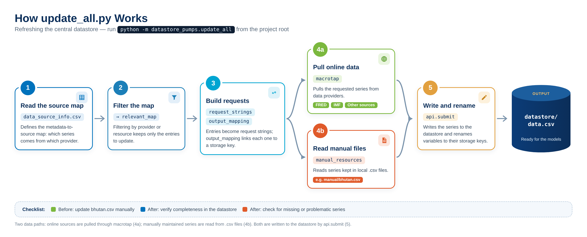
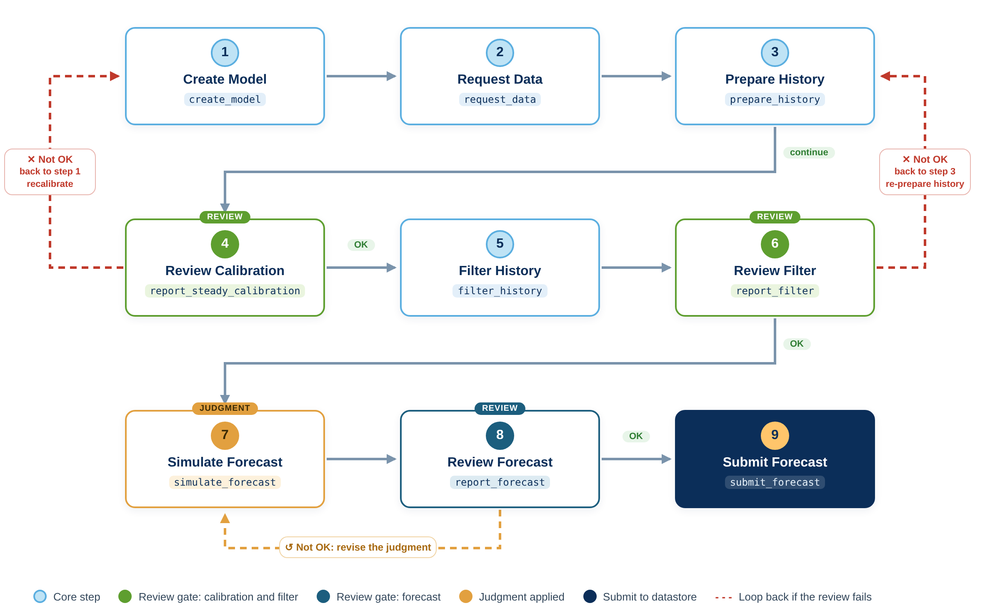
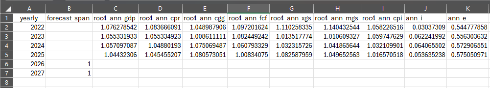
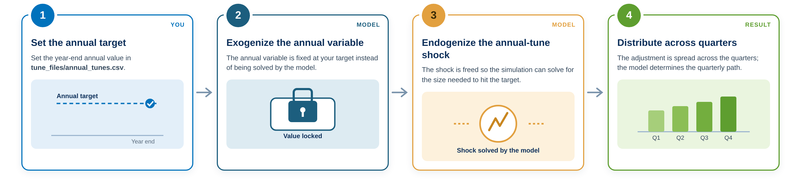

Forecasting Workflow¶
This section walks through a full forecast round.
Always run from the project root and activate Python environment
Execute every command from the main project directory (for example C:\CPM_Tool) with cpm_venv activated, so that the correct modules are used.
Economy Forecast Order¶
For each forecast round, the external economies are forecast before the focus economies, and the United States runs first.

Why the US first?
US CPI projections are needed to compute real exchange rate gaps against the US dollar for all other external economies.
A: Update Data¶
Step 1: Manually update data¶
If you have data that is entered manually, update the CSV file before running update_all.
Ex. Bhutan's' data are updated manually before running update_all.
1. Get the source data. Download the latest Monthly Statistical Bulletin from the Royal Monetary Authority of Bhutan publications page: https://www.rma.org.bt/publication/31/

2. Update the CSV file. Enter the new observations in datastore_pumps/manual/bhutan.csv. The file holds quarterly series (for example NGDP and RGDP) in one block and monthly series (for example CPI) in another.

3. Refresh the datastore. Save and close the file, then run python -m datastore_pumps.update_all.
Keep the existing layout
Add new periods below the last observation in each block and keep the existing headers and date formats (YYYY-Qn for quarterly, YYYY-MM for monthly).
Adding annual data
Add/insert __yearly__ column to store annual data. When adding a new CSV file, ensure that its filename is also added to the update_all.py Manual resources section.
Step 2: Run update_all.py¶
Connection errors when running update_all
update_all downloads data from online sources such as FRED and IMF. If the connection is slow or unstable, or a data provider is temporarily unavailable, the run may stop with a connection or timeout error.
If this happens, wait a few minutes, then run the command again.
If the error persists, check your internet connection or check the source website if it is down and try again later.
Sample Data Source Error

How update_all.py works¶

data_source_info.csvdefines the metadata-to-source map.- Filtering by provider or resource creates
relevant_map. - Entries become
request_strings;output_mappinglinks them to storage keys. macrotappulls the data;manual_resourcesare read from.csvfiles.api.submitwrites the datastore and renames variables.
B: Configuring attributes.json¶
Each country model has an attributes.json file that sets the identifiers and sample periods for the forecast round. Review and update it before running the model.
What forecast IDs are for
Forecast IDs label each forecast round. They are part of the key under which results are saved in the datastore, so they let you:
- Keep track of different forecast rounds, such as a January forecast, February forecast, etc., without mixing up results.
- Properly link models to each other. A focus-country model uses the forecast IDs to find the right external economies inputs.
Agree on a naming standard before you start
Because forecast IDs are used to store and retrieve results across models, it is worth agreeing on a naming convention with your team before the first forecast round. A consistent standard IDs makes it easy to see which round a result belongs to and avoids linking a model to the wrong inputs.
| Economy | ID Format | Example ID | Note |
|---|---|---|---|
| External economies | EX_(MMMYYYY)_F(forecast round) | EX_JAN2026_F1 |
All external economies should use the same forecast ID for each forecast round. That is, us ID should be the same in cn, ea, and jp. |
| Focus economies | (2-char country code)_(MMMYYYY)__F(forecast round) | PH_JAN2026_F1 |
Whatever convention you choose, use it consistently across all country models, and keep a record of what each ID refers to.
Attributes Settings
| Setting | What it controls | Applicable to | Example |
|---|---|---|---|
us_forecast_id |
US unique identifier for this forecast round | cn, ea, jp |
"EX_JAN2026_F1" |
forecast_id |
Unique identifier for this forecast round | All | "EX_JAN2026_F1" for cn, ea, jp/ PH_JAN2026_F1 for ph |
external_forecast_id |
External forecast set used by domestic models | ph, in, bt |
"EX_JAN_F1" |
forecast_end_period |
End date for projections | All | "2027-Q4" |
history_end_period |
Last period of historical data | us, cn, ea, jp |
"2025-Q4" |
history_start_period |
Start of historical sample | All | "2010-Q1" |
Illustrative attributes.json
United States: us
{
"forecast_id": "EX_JAN2026_F1",
"forecast_end_period": "2027-Q4",
"history_end_period": "2026-Q2",
"history_start_period": "2010-Q1"
}
For cn, ea, jp
{
"us_forecast_id": "EX_JAN2026_F1",
"forecast_id": "EX_JAN2026_F1",
"forecast_end_period": "2027-Q4",
"history_end_period": "2026-Q2",
"history_start_period": "2010-Q1"
}
For focus economies: ph, in, bt
C: Forecast Economies¶
The Model Nine Steps¶
Every country model follows the same nine steps, grouped into three phases: Phase A (Build and Load), Phase B (Calibrate and Filter), and Phase C (Forecast and Submit). Each step is a module run from the project root:
For example, python -m us.create_model runs Step 1 for United States.

Use the report steps
Steps 4, 6 and 8 validate calibration, data quality and forecast reasonableness. Pause at each one and review the outputs before moving on.
Use the run_all module in each country folder to skip report_steady_calibration and report_filter.
Note: Any applied tunes will refresh and revert to their original state once run_all is executed.
Use the step-by-step run when you need to review calibration and filter results.
python -m {country}.create_model
python -m {country}.request_data
python -m {country}.prepare_history
python -m {country}.report_steady_calibration
python -m {country}.filter_history
python -m {country}.review_filter
python -m {country}.simulate_forecast
python -m {country}.review_forecast
python -m {country}.submit_forecast
Steps Description¶
| # | Step | Module | What it does |
|---|---|---|---|
| 1 | Create Model | create_model |
Creates and calibrates the economic model with country-specific parameters. Saves the model to a pickle file for use in later steps. |
| 2 | Request Data from Datastore | request_data |
Requests historical data from the central datastore based on the input mapping configuration, and downloads the raw data needed for estimation and forecasting. |
| 3 | Prepare History | prepare_history |
Processes raw historical data, applies transformations, calculates derived variables and prepares the dataset for running the Kalman filter on the history. |
| 4 | Review Steady-State Calibration | report_steady_calibration |
Generates charts and analysis of the model's steady-state calibration against historical data. Review that long-term equilibrium assumptions are appropriate before filtering and forecasting. |
| 5 | Filter History | filter_history |
Applies statistical filters to separate trends from cyclical components, creating the filtered series used as forecast inputs. |
| 6 | Report Filter | report_filter |
Generates charts and analysis of the filtered data to validate the trend–cycle decomposition and review model inputs. |
| 7 | Simulate Forecast | simulate_forecast |
Runs the model to generate forecasts. This is the step that typically requires manual, judgmental adjustments — see Simulate Forecast and Judgment. |
| 8 | Report Forecast | report_forecast |
Creates charts, tables and analytical outputs presenting the forecast in a standard format for review and distribution. |
| 9 | Submit Forecast | submit_forecast |
Uploads the forecast results to the central datastore, making them available to other models and for final reporting. |
Simulate Forecast and Judgment¶
simulate_forecast (Step 7) is where judgment enters the forecast. There are two ways to apply it: annual tunes and manual adjustments.
Annual Tunes¶
- Tunes set a variable directly; the simulation solves for the shocks needed to hit the target.
- Tunes constrain the annual result — the model determines the quarterly path.
- Enter annual values in
tune_files/annual_tunes.csvwhereforecast_span = 1. rocis the gross rate of change, and all rates, including interest rates, are entered as decimals.- Save and close the file before running the forecast.
Annual Tunes File

Entering rates
| You want | Enter |
|---|---|
5% growth (as roc) |
1.05 |
3% growth (as roc) |
1.03 |
| A 6.5% interest rate | 0.065 |
How annual tunes work

Quarterly tunes adjustments¶
The simulation script contains a free-form area for judgment on variables and shocks that are already declared in the model.
#==================================================================
# Add judgmental adjustments here
## Syntax
# quick_tunes = {"<variable>": {ir.qq(<year>, <q>): <value>, ...}, ...}
# Set quarters and values with: ir.qq(2025, 4): 1.008
# - one entry per quarter, several quarters go in the same inner dictionary
# - quarter must be in the forecast period and have no actual data
# - don't tune a quarter that is already pinned
# - don't tune all 4 quarters of a year that also has an annual tune
# Variables available for quarterly tuning:
# roc_gdp gross Q/Q, 1.005 = 0.5% q/q (lever: tune_gdp_gap, or shk_gdp_gap on old models)
# roc_cpi gross Q/Q, 1.008 = 0.8% q/q (lever: tune_roc_cpi)
# i decimal, 0.0575 = 5.75% (lever: tune_i)
# e level, same units as the data (lever: tune_e; not available for BT, e is pegged to IN)
quick_tunes = {
#"roc_gdp": {ir.qq(2026,2): 1.05, ir.qq(2026,3): 1.006,},
#"roc_cpi": {ir.qq(2026, 3): 1.02, },
#"i": {ir.qq(2026, 3): 0.0575, },
}
# Check which GDP lever is available
gdp_lever = "tune_gdp_gap" if "tune_gdp_gap" in shock_names else "shk_gdp_gap"
# Define levers
quick_levers = {"roc_gdp": gdp_lever, "roc_cpi": "tune_roc_cpi", "i": "tune_i", "e": "tune_e", }
# Sanity check ranges
quick_ranges = {"roc_gdp": (0.9, 1.1), "roc_cpi": (0.9, 1.1), "i": (0, 0.3), }
# Perform swap
for n, points in quick_tunes.items():
for t, v in points.items():
# Quarter must be in the forecast span
if t not in forecast_span:
raise ValueError(f"Quick tune: {n} in {t} is outside the forecast span")
# Quarter must not already be pinned by actual available
if n in history_db and history_db[n].end >= t:
raise ValueError(f"Quick tune: {n} in {t} already has actual data")
# Value must look like the right unit (Optional check if needed)
lo, hi = quick_ranges.get(n, (-math.inf, math.inf))
if not lo <= v <= hi:
raise ValueError(f"Quick tune: {n} in {t} = {v} is outside {lo} to {hi}; check units")
plan.swap_anticipated(t, (n, quick_levers[n]), )
input_db[n][t] = v
#==================================================================
No new variables
New variables cannot be introduced here unless they are first added to the model equations.
Revisit existing judgment
Review adjustments carried over from earlier rounds against current conditions before re-running.